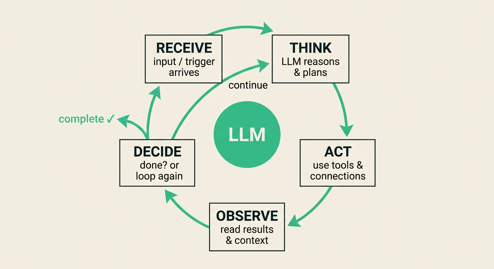
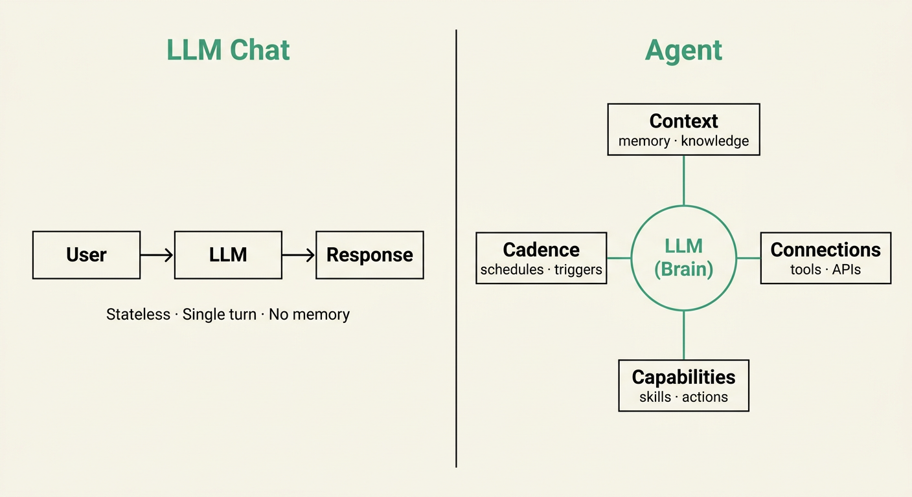

A year ago "agent" meant a chatbot you prompt; now it means something that acts on its own — and that gate, the human-in-the-loop decision point, is where the IM governs.

On familiar work the construction step is now near-free, so the binding constraint moved to the ends — the framing at the front and the judgment at the back.
The advantage is real and conditional — the same evidence proves both; task type decides which.
This is workflow design — set before the agent runs. That's architecture, not the in-task judgment calls where adding AI degrades the decision.
Subordinate to the attention budget: attention is the binding constraint, tokens are the purchasable one. Grounded need · a 15-year-old mechanism · my synthesis. Per-dev agent spend commonly $150–250/month, heavy shops far more; Gartner expects >40% of agentic projects canceled by end-2027.
Not an AI sticker — velocity out; judged outcomes, attention budget, agent cost in.
The audit takes one sprint. It tells you where to put governance before someone else decides for you.
As agents climb it, your job moves from doing the work, to steering it, to governing it.
Synthesis · autonomy framing after Feng, McDonald & Zhang (Univ. of Washington, 2025); cf. SAE J3016, Cloud Security Alliance 2026

Five failure modes · Webframp practitioner analysis